GOJO SATURU
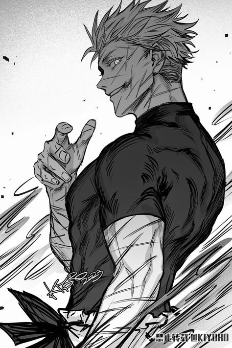
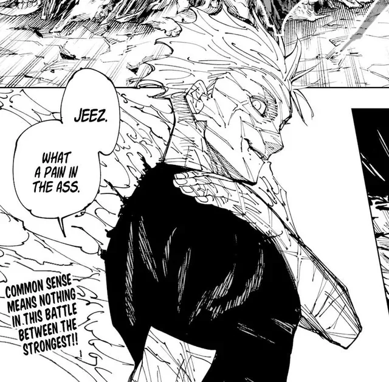
Gojo Satoru is a key character in the anime and manga series Jujutsu Kaisen. He is a highly skilled sorcerer and a teacher at Tokyo Metropolitan Jujutsu Technical High School. Known for his immense power and playful personality, Gojo is considered the strongest sorcerer of the modern era. He possesses the rare Six Eyes and the Limitless cursed technique, granting him unparalleled abilities and control over space.
Key aspects of Gojo Satoru:
Strength and Abilities:
Gojo is renowned for his combat prowess, particularly his mastery of cursed techniques and cursed energy. He can manipulate space, teleport, and use Domain Expansion: Unlimited Void. His Six Eyes allow him to perceive the world in intricate detail and maximize his cursed energy efficiency.
Personality:
Gojo is often depicted as carefree, confident, and somewhat arrogant, but he deeply cares for his students and is dedicated to protecting them.
Role in the Story:
Gojo serves as a mentor to Yuji Itadori and other students, guiding them in their jujutsu training while also battling powerful curses and threats.
Legacy:
Gojo's birth with the Six Eyes and Limitless was a significant event in the Jujutsu Kaisen world, disrupting the balance and leading to the strengthening of curses.
Fan Favorite:
Gojo's popularity has soared, making him a fan favorite and a recognizable figure in the anime community.
TOJI FUSHIGORO

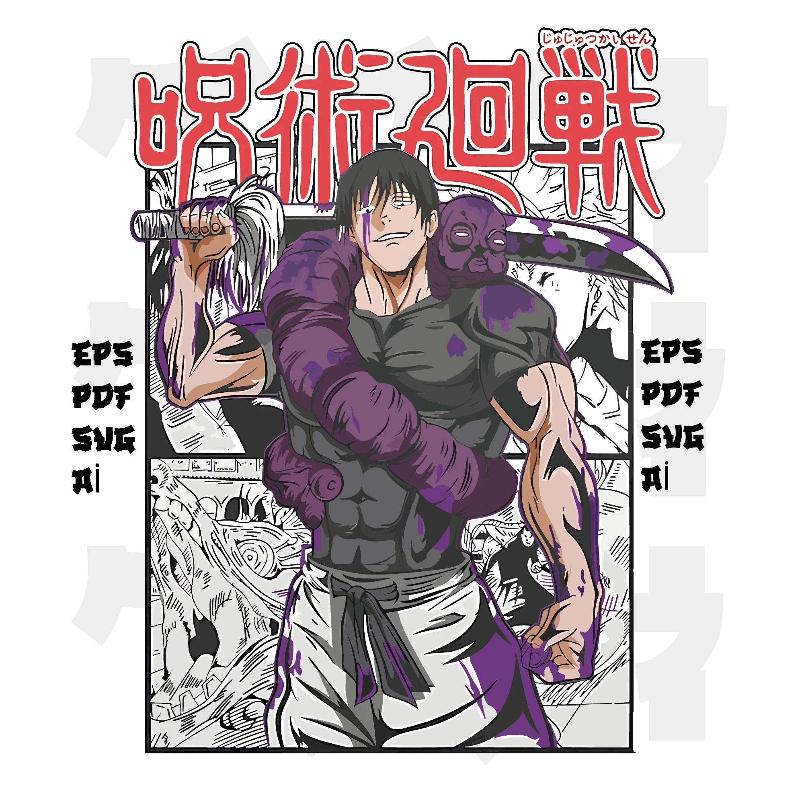
Toji Fushiguro is a complex and pivotal character in Jujutsu Kaisen, known as the "Sorcerer Killer." Born into the Zenin clan, he possesses a Heavenly Restriction, granting him immense physical abilities while completely lacking cursed energy. This makes him an anomaly in the Jujutsu world, ostracized by the Zenin clan. He became a renowned assassin, specializing in killing sorcerers. Toji is also Megumi Fushiguro's father.
Key Points about Toji Fushiguro:
Heavenly Restriction:
His body is a result of a Heavenly Restriction, granting him superhuman strength, speed, and senses, while completely devoid of cursed energy.
Sorcerer Killer:
Toji is a feared assassin who specializes in killing sorcerers.
Zenin Clan Outcast:
He was ostracized and abused by the Zenin clan due to his lack of cursed energy.
Father of Megumi:
He is the biological father of Megumi Fushiguro, though he initially abandons him.
Impact on the Story:
Toji's actions, like his fight with Gojo and his role in the Star Plasma Vessel incident, significantly impact the events and characters of Jujutsu Kaisen.
Unconventional Fighting Style:
He utilizes his physical prowess and a variety of cursed tools, like the Playful Cloud, to overcome opponents, even those with immense cursed energy.
Complex Character:
Despite his cold exterior, Toji is shown to have complex emotions, especially regarding his son Megumi and his past with the Zenin clan.
SUKUNA
Ryomen Sukuna, known as the "King of Curses," is a powerful antagonist from the Jujutsu Kaisen manga and anime series. He was a Heian Era sorcerer, feared as the strongest, but upon his death, his power was divided into 20 cursed fingers. Yuji Itadori becomes Sukuna's vessel by consuming one of these fingers, thus reviving the sorcerer. Sukuna is portrayed as a malevolent and egotistical figure, constantly seeking to cause chaos and suffering.
Here's a more detailed breakdown:
Ancient Sorcerer:
Sukuna was a human sorcerer during Japan's Heian Era, renowned for his immense power.
King of Curses:
He was so powerful that he became known as the "King of Curses" and was considered a walking disaster, even by other sorcerers.
Cursed Object:
Upon his death, his power was fragmented into 20 fingers, each a powerful cursed object.
Vessel:
Yuji Itadori becomes Sukuna's vessel after consuming one of these fingers, allowing Sukuna to manifest in the world.
Antagonist:
Sukuna is the primary antagonist of Jujutsu Kaisen, constantly challenging and tormenting Yuji.
Personality:
He is depicted as arrogant, sadistic, and hedonistic, prioritizing his own pleasure and power.
Powers and Abilities:
Sukuna possesses immense cursed energy, allowing him to use powerful techniques like "Dismantle" and "Cleave" for cutting attacks and fire-based attacks. He can also regenerate limbs and potentially bring people back to life.
Two-Faced:
His name, Ryomen, means "two-faced," reflecting both his dual nature (human sorcerer turned cursed entity) and his potential for both destruction and hidden depth.
ITADORI YUJI
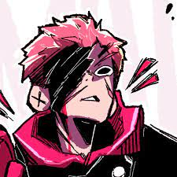
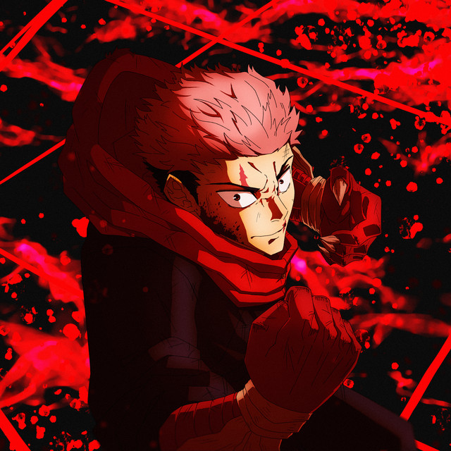
Yuji Itadori is the protagonist of Jujutsu Kaisen, a high school student who becomes a jujutsu sorcerer after consuming a cursed object. He's known for his physical strength, agility, and ability to control the powerful curse, Ryomen Sukuna, who resides within him. Yuji's defining trait is his altruistic nature, striving to save people and minimize harm, even at great personal cost.
Here are some key points about Yuji:
Superhuman abilities:
Yuji possesses exceptional physical strength, speed, and reflexes, which are further enhanced by his control over cursed energy.
Sukuna's Vessel:
He becomes the vessel for Ryomen Sukuna, a powerful curse, which grants him access to cursed energy but also puts him in danger.
Altruistic nature:
Yuji is driven by a strong desire to save people and minimize suffering, even when it means putting himself in harm's way.
Jujutsu Sorcerer:
He trains at Tokyo Jujutsu High alongside Megumi Fushiguro and Nobara Kugisaki, learning to combat curses and protect others.
Complex character:
Despite his outwardly cheerful and energetic personality, Yuji grapples with the consequences of his actions and the burden of being Sukuna's vessel.
Unique fighting style:
Yuji utilizes his physical abilities and cursed energy in a dynamic and unpredictable way, often employing martial arts techniques like Taido.
Resilience:
He demonstrates remarkable resilience in the face of adversity, enduring physical and emotional pain while continuing to fight for his ideals.
Strong friendships:
Yuji forms close bonds with his fellow sorcerers, relying on their support and camaraderie.
Overcoming trauma:
He grapples with the trauma of his past and the consequences of his actions, sometimes repressing his emotions and then exploding with them later.
Meaning of life:
Yuji's journey is also about finding meaning in his life and understanding the value of his experiences, even those that are painful.
GETO
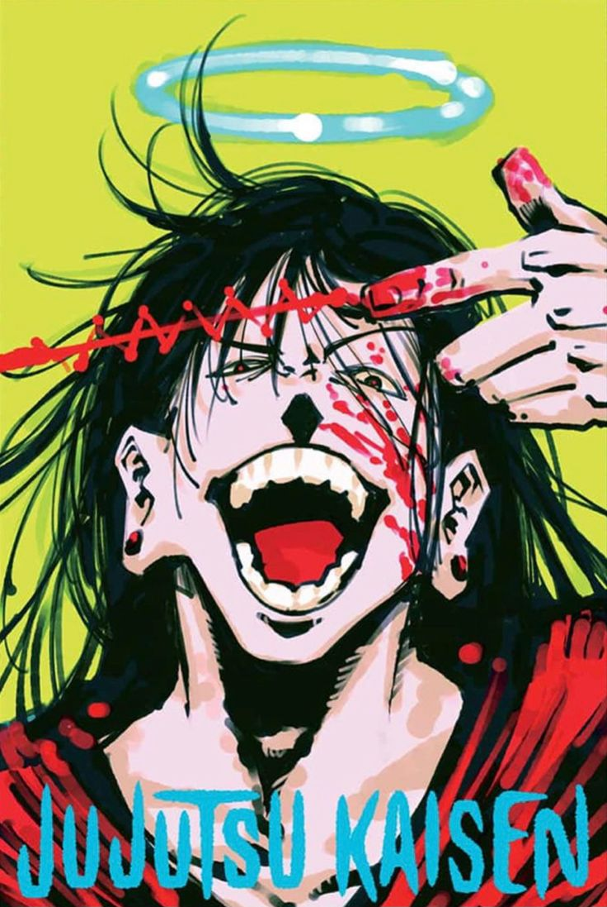
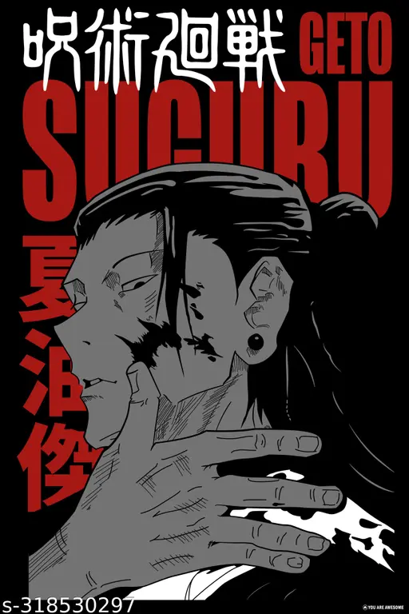
Suguru Geto is a complex and pivotal character in Jujutsu Kaisen, initially presented as a powerful sorcerer and Gojo's close friend, but later becoming a major antagonist due to his radical views on non-sorcerers. He possesses the unique Cursed Spirit Manipulation technique, allowing him to absorb and control cursed spirits. His descent into villainy stems from a disillusionment with the Jujutsu world and a belief that non-sorcerers are the root cause of curses, leading him to advocate for a world exclusively for sorcerers.
Here's a more detailed look:
Early Life and Friendship with Gojo:
Geto was a prodigious Jujutsu sorcerer, a classmate of Satoru Gojo and Shoko Ieiri at Tokyo Jujutsu High. He and Gojo were close, with Geto being one of the few who saw Gojo as a person, not just a powerful sorcerer.
Cursed Spirit Manipulation:
Geto's primary technique allows him to absorb and control cursed spirits. He ingests them as black orbs to command them.
Turning point:
The "Star Plasma Vessel Incident" is often cited as a key event that drastically altered Geto's worldview, leading him to develop a hatred for non-sorcerers.
Extremist Ideology:
Geto comes to believe that non-sorcerers are the source of curses and that a world solely for jujutsu sorcerers is the only solution.
Antagonist Role:
He becomes a major antagonist, leading large-scale plans like the "Night Parade of a Hundred Demons" and seeking to eliminate all non-sorcerers.
Complex Morality:
Despite his villainous actions, Geto's motivations are rooted in a twisted sense of justice and a desire to alleviate the suffering he sees in the Jujutsu world.
OKKUTSU YUTA

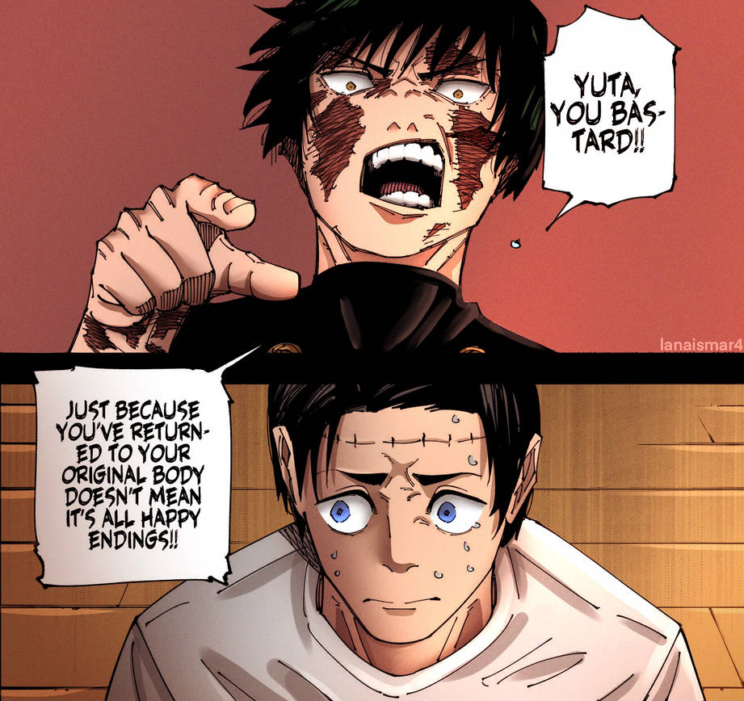
Yuta Okkotsu is a key character in Jujutsu Kaisen 0 and a powerful sorcerer in the main series. He's initially presented as a timid and lonely individual burdened by the vengeful spirit of his childhood friend, Rika Orimoto. Through his training at Tokyo Jujutsu High, he learns to control Rika's power and develops into a confident and skilled sorcerer.
Here's a more detailed breakdown:
Protagonist of Jujutsu Kaisen 0:
Yuta is the main character in the prequel movie, Jujutsu Kaisen 0, where his story of overcoming the curse of Rika is explored.
Special Grade Sorcerer:
Yuta possesses immense cursed energy and is classified as a special grade sorcerer, a rank shared by only a few powerful individuals.
Cursed by Rika:
Rika, his childhood friend, became a vengeful spirit after her death, and her curse binds her to Yuta.
Training with Gojo:
Satoru Gojo, a prominent sorcerer, recognizes Yuta's potential and takes him under his wing, guiding him at Tokyo Jujutsu High.
Copying Cursed Techniques:
Yuta's ability to copy other jujutsu techniques, likely through Rika, is a major aspect of his power.
Growth and Confidence:
Through his experiences and training, Yuta overcomes his timidity and becomes more social, forming close bonds with his classmates.
Potential to Surpass Gojo:
Gojo even acknowledges that Yuta has the potential to become a sorcerer on par with him.
Key Role in the Main Series:
Yuta also plays a significant role in the main Jujutsu Kaisen storyline, appearing as a more experienced and powerful sorcerer.
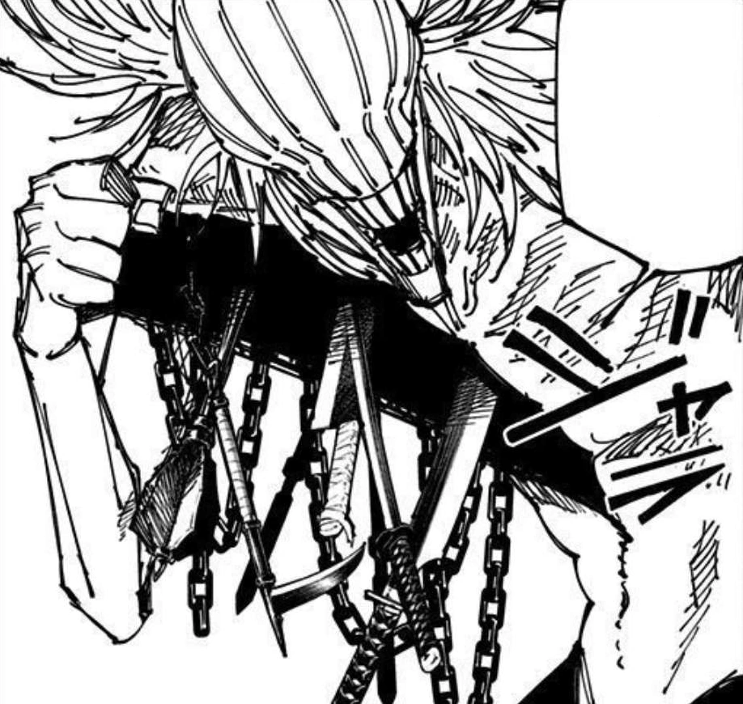
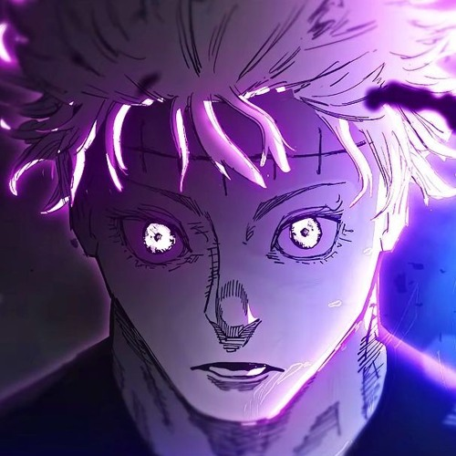
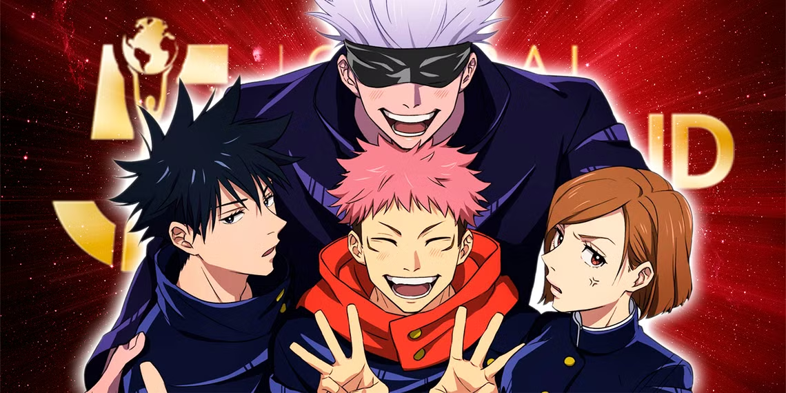
[JUJUTSU FROM ANCIENT]
呪術廻戦
もちろん！こちらが『呪術廻戦』のストーリー概要の日本語訳です：
呪術廻戦の物語は、両面宿儺という強力な呪霊の器となった高校生・虎杖悠仁を中心に展開します。虎杖は、その力を制御し、人々を守るために呪術師たちの秘密組織に加わり、東京都立呪術高専に入学します。物語は、呪霊や他の呪術師との激しい戦いを通じて、両面宿儺の祓除と、呪い及び呪力の拡散を防ぐことを目的としています。
もっと踏み込んで、渋谷事変や五条悟の封印などの重要なエピソードも掘り下げてみましょうか？それとも好きなキャラや名場面の語り合いでも？🔮